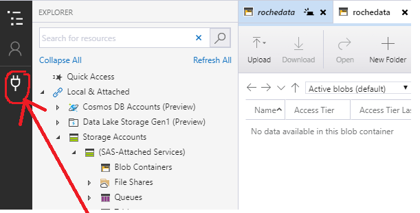
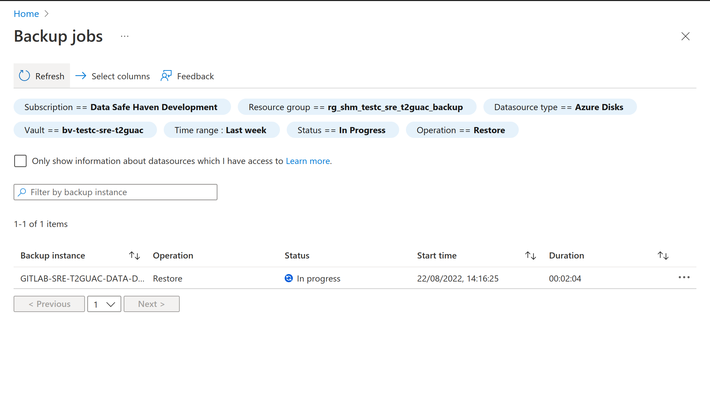

Managing data ingress and egress#
Important
This document assumes that you already have access to a Safe Haven Management (SHM) environment and one or more Secure Research Environments (SREs) that are linked to it.
Data Ingress#
It is the data provider’s responsibility to upload the data required by the safe haven.
Important
Any data ingress must be signed off by the Dataset Provider Representative, Investigator and Referee (if applicable).
The following steps show how to generate a temporary write-only upload token that can be securely sent to the data provider, enabling them to upload the data:
In the Azure portal select
Subscriptionsthen navigate to the subscription containing the relevant SHMSearch for the resource group:
RG_SHM_<SHM ID>_PERSISTENT_DATA, then click through to the storage account called:<SHM ID><SRE ID>data<storage suffix>(where<storage suffix>is a random string)Click
NetworkingunderSettingsand paste the data provider’s IP address as one of those allowed under theFirewallheader, then hit the save icon in the top leftFrom the
Overviewtab, click the link toContainers(in the middle of the page)Click
ingressClick
Shared access signatureunderSettingsand do the following:Under
Permissions, check these boxes:WriteList
Set a 24 hour time window in the
Start and expiry date/time(or an appropriate length of time)Leave everything else as default and click
Generate SAS token and URLCopy the
Blob SAS URL
Send the
Blob SAS URLto the data provider via secure email (for example, you could use the Egress secure email service)The data provider should now be able to upload data by following these instructions
You can validate successful data ingress by logging into the SRD for the SRE and checking the
/datavolume, where you should be able to view the data that the data provider has uploaded
Software Ingress#
Software ingress is performed in a similar manner to data.
Important
Software ingress must go through the same approval process as is the case for data ingress, including sign-off from the Dataset Provider Representative, Investigator and Referee (if applicable).
Follow the same steps as for data ingress above to provide temporary write access, but set the time window for the SAS token to a shorter period (e.g. several hours)
Share the token with the Investigator, so they can install software within the time window
The Investigator can perform software ingress via
Azure Storage Explorer(for instance as a zip file), by following the same instructions as the data provider
Data egress#
In the Azure portal select
Subscriptionsthen navigate to the subscription containing the relevant SHMSearch for the resource group:
RG_SHM_<SHM ID>_PERSISTENT_DATA, then click through to the storage account called:<SHM ID><SRE ID>data<storage suffix>(where<storage suffix>is a random string)Click
NetworkingunderSettingsto check the list of pre-approved IP addresses allowed under theFirewallheader and check your own IP address to ensure you are connecting from one of theseClick
ContainersunderData storageClick
egressClick
Shared access signatureunderSettingsand do the following:Under
Permissions, check these boxes:ReadList
Set a time window in the
Start and expiry date/timethat gives you enough time to extract the dataLeave everything else as default click
Generate SAS token and URL
Leave this portal window open and move to the next step
Open
Azure Storage Explorer(download it if you don’t have it)Click the socket image on the left hand side
On
Select Resource, chooseBlob containerOn
Select Connection Method, chooseShared access signature URL (SAS)and hitNext
On
Enter Connection Info:Set the
Display nameto “egress” (or choose an informative name)Copy the
Blob SAS URLfrom your Azure portal session into theBlob container SAS URLbox and hitNext
On the
Summarypage, hitConnectOn the left hand side, the connection should show up under
Local & Attached > Storage Accounts > (Attached Containers) > Blob Containers > ingress (SAS)You should now be able to securely download the data from the Safe Haven’s output volume by highlighting the relevant file(s) and hitting the
Downloadbutton
The output volume#
Once you have set up the egress connection in Azure Storage Explorer, you should be able to view data from the output volume, a read-write area intended for the extraction of results, such as figures for publication.
On the SRD, this volume is /output and is shared between all SRDs in an SRE.
For more info on shared SRE storage volumes, consult the Safe Haven User Guide.
üóÑÔ∏è Backup#
üóÉÔ∏è Restoring blobs#
Blob containers in backed up storage accounts are protected by operational backup. It is possible to restore the state of the blobs to an earlier point in time, up to twelve weeks in the past.
The blob containers covered by the protection for each SRE are the
ingress container (mounted at
/data)egress container (mounted at
/output)backup container (mounted at
/backup)
To restore these containers to a previous point in time:
Important
Blobs are restored ‘in place’. The current state will be overwritten by the point which you restore to.
In the Azure portal select
Subscriptionsthen navigate to the subscription containing the relevant SRESearch for the resource group:
RG_SHM_<SHM ID>_SRE_<SRE ID>_BACKUP, then click on the storage account called:bv-<shm id>-sre-<sre id>Click
Backup instancesunderManagein the left-hand menuEnsure that the
Datasource typefilter is set toAzure Blobs (Azure Storage)Click on the storage-account backup instance
Select a point in the past to restore to and click
Restore
Click on
Next: Restore ParametersYou can now choose whether to restore all, or a subset of the containers. In the example below the ‘egress’ and ‘backup’ containers are selected
Click on
Validate
Click on
Next: Review + restoreClick on
Restore
üíø Restoring disks#
Backed up disks have incremental snapshots taken daily.
These snapshots are stored in the backup resource group,RG_SHM_<SHM ID>_SRE_<SRE ID>_BACKUP.
The disks covered by the protection for each SRE are the
GitLab data disk
CodiMD data disk
CoCalc data disk
PostgreSQL data disk
MSSQL data disk
To restore a disk:
Important
Restoring a disk creates a new disk object from the incremental snapshots. You will need to specify where to create the disk and its name. You will also need to attach the disk to any virtual machines which should use it and enroll the new disk into the backup system.
In the Azure portal select
Subscriptionsthen navigate to the subscription containing the relevant SRESearch for the resource group:
RG_SHM_<SHM ID>_SRE_<SRE ID>_BACKUP, then click on the storage account called: `bv--sre- Click
Backup instancesunderManagein the left-hand menuEnsure that the
Datasource typefilter is set toAzure Disks
Click on the disk to restore
Click
RestoreClick
Select restore pointto choose which snapshot to revert to and clickSelect. By default only snapshots from the last 30 days are displayed but this can be adjustedClick
Next: Restore ParametersEnter the subscription and resource group in which to create the new disk; these should match the original disk
Enter a name for the new disk and click
Validate
Click on
Next: Review + restoreClick on
RestoreWait for the restoration to finish. You can monitor the progress on the backup instance page on the Azure portal
Navigate to the resource group where the new disk has been created
Select the virtual machine that the old disk is attached to and click
Disksin the left-hand menuTake note of the old disks
LUNRemove the old disk by clicking the ‘X’ at the right-hand side of the disk table
Click
SaveClick
Attach existing disksand select the disk you restoredEnsure the restored disk has the same ‘LUN’ as the old disk
Click
Save
Restart the virtual machine
üíø Enrolling restored disks for backup#
On your deployment machine.
Ensure you have the same version of the Data Safe Haven repository as was used by your deployment team
Open a
Powershellterminal and navigate to thedeployment/administrationdirectory within the Data Safe Haven repositoryEnsure you are logged into
AzurewithinPowershellusing the command:Connect-AzAccount. This command will give you a URL and a short alphanumeric code. You will need to visit that URL in a web browser and enter the codeNB. If your account is a guest in additional Azure tenants, you may need to add the
-Tenant <Tenant ID>flag, where<Tenant ID>is the ID of the Azure tenant you want to deploy intoNote the name of the restored disk and the name of the resource group it belongs to
Run the following script subsituting
and with the names of the resource group and disk respectively: ./SRE_Enroll_Disk_Backup.ps1 -shmId <SHM ID> -sreId <SRE ID> -resourceGroup <resource group name> -diskName <disk name>
üì¶ Updating allowed repository packages#
For a Tier 3 SRE, only the packages named in the allowlists at environment_configs/package_lists/ can be installed by users.
To update the allowlists on an SHM, you should use the SHM_Package_Repository_Update_Allowlists.ps1 script.
PS> /deployment/administration/SHM_Package_Repository_Update_Allowlists.ps1 -shmId <SHM ID>
By default, this script will use the allowlists present in environment_configs/package_lists/ but you may use the -allowlistDirectory option to specify another directory containing the allowlists.
It is assumed that the allowlists will have the same names as those in in environment_configs/package_lists/.